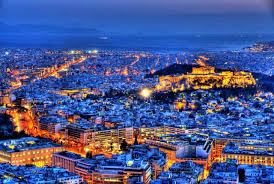

<html lang=”tr”>
 
<head>
    <meta charset="UTF-8"/>
    
    <link rel="stylesheet" href="css/index.css">
    <link rel="stylesheet" href="css/hover.css">
    
    <!--BEĞENİ İÇİN-->
    
    <link rel="stylesheet" href="https://cdnjs.cloudflare.com/ajax/libs/font-awesome/4.7.0/css/font-awesome.min.css">
    <link rel="stylesheet" href="https://cdnjs.cloudflare.com/ajax/libs/font-awesome/4.7.0/css/font-awesome.min.css">
    <!-- Latest compiled and minified CSS -->
    
    <!-- İCONLAR-->
    

<link rel="stylesheet" href="https://maxcdn.bootstrapcdn.com/bootstrap/4.3.1/css/bootstrap.min.css">
    

<!-- jQuery library -->
<script src="https://ajax.googleapis.com/ajax/libs/jquery/3.3.1/jquery.min.js"></script>

<!-- Popper JS -->
<script src="https://cdnjs.cloudflare.com/ajax/libs/popper.js/1.14.7/umd/popper.min.js"></script>

<!-- Latest compiled JavaScript -->
<script src="https://maxcdn.bootstrapcdn.com/bootstrap/4.3.1/js/bootstrap.min.js"></script>
   
    <link rel="stylesheet" href="https://www.w3schools.com/w3css/4/w3.css">
    <meta name="viewport" content="width=device-width, initial-scale=1">
<link rel="stylesheet" href="https://www.w3schools.com/w3css/4/w3.css">
   
    <!--Google icon-->
<link rel="stylesheet" href="https://fonts.googleapis.com/icon?family=Material+Icons">


<!--Font Awesome 5 icon-->
<link rel="stylesheet" href="https://use.fontawesome.com/releases/v5.7.0/css/all.css" integrity="sha384-lZN37f5QGtY3VHgisS14W3ExzMWZxybE1SJSEsQp9S+oqd12jhcu+A56Ebc1zFSJ" crossorigin="anonymous">
     
    <link rel="stylesheet" href="https://cdnjs.cloudflare.com/ajax/libs/font-awesome/4.7.0/css/font-awesome.min.css">
    
    
    
    
    
    </head>
<body>
   
    
 

     <div class="navbar navbar-dark navbar-expand-lg fixed-top" style="background-color: #060689">
        <div class="container">	<a class="navbar-brand" href="../index.html">
					
				</a>
				<button class="btn btn-primary navbar-toggler" data-toggle="collapse" data-target="#navcl"><span class="navbar-toggler-icon "></span></button>
				<div class="collapse navbar-collapse" id="navcl">
                   
                    
					<ul class="navbar-nav" style="width: 100%;padding: 17px">
                        
                        <li class="nav-item "><a class="nav-link" href="../index.html" ><p style="font-size:15px;font-weight: bold">ANASAYFA</p></a></li>
                        
                       
                        <li class="nav-item"><a class="nav-link" href="../konaklama.html"><p style="font-size:15px;font-weight: bold">KONAKLAMA</p></a></li>
                        <li class="nav-item"><a class="nav-link" href="../galeri.html"><p style="font-size:15px;font-weight: bold">GALERİ</p></a></li>
                        <li class="nav-item active"><a class="nav-link" href="../seyahat.html"><p style="font-size:15px;font-weight: bold">SEYAHAT</p></a></li>
						<li class="nav-item"><a class="nav-link" href="../gezginler.html"><p style="font-size:15px;font-weight: bold">GEZGİNLER</p></a></li>
                         <li class="nav-item"><a class="nav-link" href="../tur.html"><p style="font-size:15px;font-weight: bold">TUR</p></a></li>
                             <li class="nav-item "><a class="nav-link" href="../giris.html"><p style="font-size:15px;font-weight: bold">GİRİŞ YAP</p></a></li>
                             <li class="nav-item "><a class="nav-link" href="../kay%C4%B1tol.html"><p style="font-size:15px;font-weight: bold">KAYIT OL</p></a></li>
                    </ul>
						
				
				</div>
			</div>
       		</div>	
<br><br>
    <br><br><br><br>
     <div class=container>
         <center>
                 <i class="fa fa-automobile" style="font-size:36px;padding: 15px;color:red"></i>  <i class="fa fa-fighter-jet" style="font-size:36px;padding: 15px;color:yellow;"></i><i class="fa fa-bus" style="font-size:36px;padding: 15px;color: blue;"></i><i class="fa fa-bicycle" style="font-size:36px;padding: 15px;color: coral"></i>  <i class="fa fa-plane" style="font-size:36px;padding: 15px;color: darkorchid"></i> <i class="fa fa-train" style="font-size:36px;padding: 15px;color: fuchsia"></i><i class="fa fa-motorcycle" style="font-size:36px;padding: 15px"></i>       <i class="fa fa-automobile" style="font-size:36px;padding: 15px;color:red"></i>  <i class="fa fa-fighter-jet" style="font-size:36px;padding: 15px;color:yellow;"></i><i class="fa fa-bus" style="font-size:36px;padding: 15px;color: blue;"></i><i class="fa fa-bicycle" style="font-size:36px;padding: 15px;color: coral"></i>  <i class="fa fa-plane" style="font-size:36px;padding: 15px;color: darkorchid"></i> <i class="fa fa-train" style="font-size:36px;padding: 15px;color: fuchsia"></i><i class="fa fa-motorcycle" style="font-size:36px;padding: 15px"></i>   <i class="fa fa-automobile" style="font-size:36px;padding: 15px;color:red"></i> </center>
            <div class="header">
                 
                <marquee behavior=alternate direction=up scrollamount=2 scrolldelay=65 height=80 style="Text-align;filter:wave(add=0,phase=1, freq=1,strength=15,color=.FFFFFF)" mce_style="Text-align;filter:wave(add=0,phase=1, freq=1,strength=15,color=.FFFFFF)"><center>ANTALYA<br> <a href="antalya.html"><i class="fa fa-repeat" style="font-size:36px;padding: 15px;color: darkgoldenrod;float:left;"></i></a>ANTALYA<a href="antalya.html"><i class="fa fa-repeat" style="font-size:36px;padding: 15px;color:darkgoldenrod;float:right;top:500px"></i></a></center></marquee>  
            
</div>
        
        <div class="row">
  <div class="leftcolumn">
<center>
    <div class="card w3-hover-shadow">
     
            
              
      <h2><b>ANTALYA</b></h2>
      <h5>18 ŞUBAT 2019</h5>
  
        
         <center>

          
<div class="container">
    <div class="row">
     <div class="col-lg-12 col-md-12 col-sm-12">
        
        
     
            
    </div>
     
        
       
        <br><br><br>
  
  
        
        </div>
    </div>
  </center>

    <style>

    #zoom img {

-webkit-transition: all 1s ease;
-moz-transition: all 1s ease;
-o-transition: all 1s ease;
transition: all 1s ease;

}
        
#zoom img:hover {
-moz-transform: scale(1.3);
-o-transform: scale(1.3);
transform: scale(1.3);
-webkit-transform: scale(1.3);
-ms-transform: scale(1.3);

}
    </style>
          
        <br><br><br>
        
      <p><b>ANTALYA HAKKINDA BİLİNMESİ GEREKENLER</b></p>
      <p style="text-align: left">Antalya, Akdeniz Bölgesi'nde yer alan Antalya şehrinin aynı ismi taşıyan merkez ilçesidir.
Antalya, Türkiye’nin önemli turizm merkezlerinden biridir. Doğası, palmiyelerle sıralanmış bulvarları, geleneksel mimarisini korumuş merkezi Kaleiçi ve büyük ölçekli turizm yatırımları ile Türkiye'nin en önemli turizm merkezlerinden biridir. Antalya aynı zamanda, Türkiye'nin büyük ölçekli göç alan kentlerinden biridir.
2010 yılı verilerine göre Antalya şehir merkezinde 502.491 erkek, 498.827 kadın olmak üzere toplam 1.001.318 kişi yaşamaktadır.

Tarih Her ne kadar 1215'te Gautler de Montbellard Kıbrıs'tan getirdiği kuvvetlerle şehri ele geçirip Türkleri kılıçtan geçirdiyse de, Antalya 1. Keyhüsrev tarafından geri alınır. XII. yüzyıl sonlarında Selçuklu Devleti sona erince Isparta ve Antalya arasındaki topraklar Teke Aşireti'nin bir kolu olan Hamidoğulları'nın egemenliğine girer. Antalya'yı ele geçiren İlyasbeyoğlu Dündar Bey, buranın yönetimini, kardeşi Yunus Bey'e bırakır. Yunus Bey'in oğulları, Antalya'da hüküm sürdüler. Hamidoğulları'nın bu ikinci kolu Tekeoğuları adıyla anılır. Kıbrıs Kralı Pirre, 1361'de Antalya'yı ele geçirdiyse de, Tekeoğulları'ndan Mehmed Bey, 1373'de şehri geri alır. Bunun oğlu Osman Bey zamanında Antalya, Yıldırım Bayezıd, buranın yönetimini Firuz Bey'e verdi (1391). Ancak Antalya'nın Osmanlılara geçişi konusunda kaynaklara tek bir tarih göstermemektedir (Oruç Bey ve Neşri'ye göre 1389—1392; İbni Kemal'e göre 1391).
Anadolu'da beyliklerin egemen olduğu bir dönemde, 1335—1340 tarihleri arasında Antalya'ya gelen Arap seyyah İbn

Battuta Antalya’dan bahsederken şöyle der:
Kent halkı, ırk ve dinlerine göre ayrı ayrı mahallelere yerleşmişler. Hıristiyan tüccarlar Mina adıyla anılan mahallede otururlar. Bu mahallenin çevresini bir sur kuşatmakta ve Cuma vakti geceleri surun kapıları kapatılmaktadır. Rumlar başka bir mahallede kendi başlarına otururlar. Onların bulundukları yer de bir surla çevrili. Yahudilerin de yine kendilerine ait, surla çevrili bir mahallesi vardır. Müslüman ahaliye gelince, bunlar asıl büyük şehirlerde yaşamaktadırlar. Burası bir Cuma mescidi ve medrese ile birçok hamamı, zengin ve tertipli büyük çarşıları ihtiva etmektedir.
          <br><br></p><i class='fas fa-angle-double-down' style='font-size:36px'></i>
    </div>
    
    </center>
  </div>
  <div class="rightcolumn" >
    <div class="card w3-hover-shadow">
        <center><hr><h4><b>ANTALYA'DA HAVA DURUMU </b></h4><hr style="background-color:black"></center>
    <div class="w3-card-4 w3-margin " style="width:90%">
  <div class="w3-display-container w3-text-white w3-hover-shadow">
    
    <div class="w3-md w3-display-bottomleft w3-padding"><b>ANTALYA 70&deg; F</b></div>
  </div>
  <div class="w3-row">
    <div class="w3-third w3-center w3-hover-shadow">
      <h3>PER</h3>
      
    </div>
    <div class="w3-third w3-center w3-hover-shadow ">
      <h3>CUM</h3>
      
    </div>
    <div class="w3-third w3-center w3-margin-bottom w3-hover-shadow">
      <h3>CUM</h3>
      
    </div>
  </div>
</div>
    <div class="card">
        <CENTER><hr>
      <h6 ><b>POPÜLER YERLER</b></h6><hr style="background-color: black">
            <div class="aaaa" style="overflow: scroll;height: 615px;">
      <div class="fakeimg"><p>KALEİÇİ</p><hr></div>
      <div class="fakeimg"><p>DÜDEN ŞELALESİ</p><hr></div>
      <div class="fakeimg"><p>KONYAALTI PLAJI</p><hr></div>
                 <div class="fakeimg"><p>ANTALYA MÜZESİ</p><hr></div>
                 <div class="fakeimg"><p>YİVLİMİNARE CAMİ</p><hr></div>
                <div class="fakeimg"><p>HIDIRLIK KULESİ</p><hr></div>
              
           
              
              
                  
                  
                </div>
            
            </CENTER>
    </div>
  
  </div>
</div><br><br>
</div>

    <style> 
*

/* Header/Blog Title */
.header {
  padding: 30px;
  font-size: 40px;
  text-align: center;
  background: white;
}

/* Create two unequal columns that floats next to each other */
/* Left column */
.leftcolumn {   
  float: left;
  width: 75%;
}

/* Right column */
.rightcolumn {
  float: left;
  width: 25%;
  padding-left: 20px;
}

/* Fake image */
.fakeimg {
 
  width: 100%;
  padding: 20px;
}

/* Add a card effect for articles */
.card {
   background-color: white;
   padding: 20px;
   margin-top: 20px;
}

/* Clear floats after the columns */
.row:after {
  content: "";
  display: table;
  clear: both;
}

/* Footer */
.footer {
  padding: 20px;
  text-align: center;
  background: #ddd;
  margin-top: 20px;
}

/* Responsive layout - when the screen is less than 800px wide, make the two columns stack on top of each other instead of next to each other */
@media screen and (max-width: 800px) {
  .leftcolumn, .rightcolumn {   
    width: 100%;
    padding: 0;
  }
}
</style>
    
    
    
    
           

               
    </div>  
     
               

                   <center>
                
<div class="container">
    <div class="row">
     
        <div class="col-lg-6 col-md-6 col-sm-12">
        
        
          <div id="zoom">
        <div>
           <div class="card  w3-hover-shadow" style="width:100%"><br><br>
  
  <div class="container">
      <br><br>
    <h4><a href="antalya.html"    ><i class="faS FA-RESTROOM" style="font-size:36px;padding: 15px;color:black;float:left;"></i></a><b>ANTALYA NUFÜS ÖZELLİKLERİ</b><a href="antalya.html"><i class="fas fa-users" style="font-size:36px;padding: 15px;color:black;float:right;"></i></a></h4><br><br> 
    <p style="text-align: left;">
        
        Türkiye’de ikamet eden nüfus 2018 yılında, bir önceki yıla göre 1 milyon 193 bin 357 kişi arttı. TÜİK verilerine göre erkek nüfus 41 milyon 139 bin 980 kişi olurken, kadın nüfus 40 milyon 863 bin 902 kişi oldu. Buna göre toplam nüfusun P,2’sini erkekler, I,8’ini ise kadınlar oluşturdu. Türkiye nüfusunun ,4’ünün ikamet ettiği İstanbul, 15 milyon 67 bin 724 kişi ile en çok nüfusa sahip olan il oldu. Bunu sırasıyla; 5 milyon 503 bin 985 kişi ile Ankara, 4 milyon 320 bin 519 kişi ile İzmir, 2 milyon 994 bin 521 kişi ile Bursa ve 2 milyon 426 bin 356 kişi ile Antalya takip etti. Bayburt ise 82 bin 274 kişi ile en az nüfusa sahip olan il oldu.<br>
      <span style="color:red">Antalya nüfusunda artış</span>
        
        2017 yılında 2 milyon 364 bin 396 olan Antalya nüfusu 2018 yılında 2 milyon 426 bin 356’ya yükseldi. Antalya bu nüfus ile İstanbul, Ankara, İzmir, Bursa illerinden sonra 5. sırada yer aldı. Antalya’da ikamet eden nüfus 2018 yılında, bir önceki yıla göre 61 960 kişi arttı. 2017 yılına göre 2018 yılında kentte ikamet eden nüfus %2,62 oranında artış gösterdi.<br>
      Burdur yüzde 1,75 oranında arttı
        Isparta 2018 yılında 441 bin 412 nüfus ile il sıralamasında 45. sırada yer aldı. Isparta’da ikamet eden nüfus 2018 yılında, bir önceki yıla göre 7 bin 582 kişi arttı. 2017 yılına göre 2018 yılında Isparta’da ikamet eden nüfus %1,75 oranında arttı.

<br>
        
      
      
      
      
      
      
      
      </p> <i class='fas fa-angle-double-down' style='font-size:36px'></i>
  </div>
</div>
        </div>
    </div>
        </div>
            <div class="col-lg-6 col-md-6 col-sm-12">
        
        
        <div id="zoom">
        <div>
           <div class="card w3-hover-shadow" style="width:100%"><br><br>
  
  <div class="container">
      <br><br>
     <h4><a href="antalya.html"><i class="fas fa-cloud-sun " style="font-size:36px;padding: 15px;color:dimgray;float:left;"></i></a><b>ANTALYA İKLİM ÖZELLİKLERİ</b><a href="antalya.html"><i class="fas fa-cloud-meatball" style="font-size:36px;padding: 15px;color:dimgray;float:right;"></i></a></h4><br><br> 
      <p style="text-align: left;"><span style="color:red">Antalya İklimi</span><br>

Genel olarak ılıman sayılır. Akdeniz iklimiyle Karadeniz iklimi arasında bir geçiş iklimi husûsiyeti gösterir. Edremit Körfezinde Akdeniz iklimi hüküm sürerken, orta kısımda ve Gelibolu Yarımadasında havalar soğuk geçer Balkanlar üzerinden gelen soğuk rüzgârlar tesirli olur. Kar yağışı azdır. Yağış kış ve ilkbaharda fazladır. Yıllık yağış miktarı 600-1200 mm arasındadır. Don olayları fazladır. Senede bir aya yakın donlu geçer. Sıcaklık -10° ile +38° arasında seyreder. 

Çanakkale’nin ancak % 3’ü ekime elverişli değildir. % 53’ü ormanlarla ve % 10’u çayır ve mer’alarla örtülüdür. Ormanlar iç bölgelerde daha kesiftir. % 34 arâzide çeşitli tarım ürünleri ekilir. Orman bakımından en zengin illerimizden biridir.<span style="color:red">Antalya İklimi</span><br>
          Antalya İklimi; genel olarak Akdeniz iklimi görülmektedir. Yazları sıcak ve kurak, kışları ılık ve yağışlı geçen bu iklim tipi diğer bir değişle ılıman deniz ve sıcak deniz iklim sınıfına girmektedir, daha iç kesimlerde ise soğuk ve yarı karasal iklim tipi görülmektedir. Yazın ortalama sıcaklık 30 ila 34 derece arasında değişmektedir. Ocak ayında ise sıcaklık ortalama 9-15 derece arasında değişim göstermektedir.

<br><br><br>    

 </p> 
  </div><i class='fas fa-angle-double-down' style='font-size:36px'></i>
</div>
        </div>
    </div>
        </div>
  
        
  
  
        
        </div>
    </div>
           
  </center>
               
               
               
         <center>      
              <center>
                
<div class="container">
    <div class="row">
     
        <div class="col-lg-6 col-md-6 col-sm-12">
        
       
          <div id="zoom">
        <div>
            
           <div class="card w3-hover-shadow" style="width:100%"> <br><br>
             
  
  <div class="container">
      <br><br>
    <h4><a href="antalya.html"><i class="fa fa-plane" style="font-size:36px;padding: 15px;color:#f8ae46;float:left;"></i></a><b>ANTALYA'YA NASIL GİDİLİR?</b><a href="antalya.html"><i class="fa fa-plane" style="font-size:36px;padding: 15px;color:#f8ae46;float:right;"></i></a><br><br><br></h4> 
    <p style="text-align: left;">Antalya, ülkemizin dünya çapında marka olmuş bir tatil cennetidir. Eşsiz güzelliği ile ziyaretçilerini büyüleyen Antalya'nın bazı illerimize olan mesafesi şöyledir.
İstanbul Antalya arası yaklaşık 727 kilometre(km) mesafede ve araçla yaklaşık 10 saat 30 dakika kadar sürmektedir.
Ankara Antalya arası yaklaşık 550 kilometre(km) mesafede ve araçla yaklaşık 7 saat 40 dakika kadar sürmektedir.
İzmir Antalya arası yaklaşık 470 kilometre(km) mesafede ve araçla yaklaşık 7 saat 20 dakika kadar sürmektedir.
Samsun Antalya arası yaklaşık 970 kilometre(km) mesafede ve araçla yaklaşık 13 saat 15 dakika kadar sürmektedir.
Adana Antalya arası yaklaşık 560 kilometre(km) mesafede ve araçla yaklaşık 8 saat 45 dakika kadar sürmektedir.
Kayseri Antalya arası yaklaşık 614 kilometre(km) mesafede ve araçla yaklaşık 9 saat 20 dakika kadar sürmektedir.
Konya Antalya arası yaklaşık 305 kilometre(km) mesafede ve araçla yaklaşık 4 saat 30 dakika kadar sürmektedir.
Gaziantep Antalya arası yaklaşık 780 kilometre(km) mesafede ve araçla yaklaşık 11 saat kadar sürmektedir.
Muğla Antalya arası yaklaşık 320 kilometre(km) mesafede ve araçla yaklaşık 5 saat 20 dakika kadar sürmektedir.
Diyarbakır Antalya arası yaklaşık 1100 kilometre(km) mesafede ve araçla yaklaşık 14 saat 40 dakika kadar sürmektedir.
Erzurum Antalya arası yaklaşık 1240 kilometre(km) mesafede ve araçla yaklaşık 17 saat 50 dakika kadar sürmektedir.
Afyon Antalya arası yaklaşık 290 kilometre(km) mesafede ve araçla yaklaşık 4 saat 10 dakika kadar sürmektedir.
</p>
      
  </div><i class='fas fa-angle-double-down' style='font-size:36px'></i>
</div>
        </div>
    </div>
        </div>
            <div class="col-lg-6 col-md-6 col-sm-12">
        
        
        <div id="zoom">
        <div>
           <div class="card  w3-hover-shadow" style="width:100%"><br><br>
  
  <div class="container">
      <br><br>
    <h4><a href="antalya.html"><i class="fa fa-taxi" style="font-size:36px;padding: 15px;color:dodgerblue;float:left;"></i></a><b>ANTALYA'DA ŞEHİR İÇİ ULAŞIM</b><a href="antalya.html"><i class="fa fa-bus" style="font-size:36px;padding: 15px;color:dodgerblue;float:right;"></i></a><br><br></h4> <br><br>
      <p style="float:left;text-align: left">
          <span style="color:red">Antalya, Antalya Halk Otobüsleri Otobüs Hatları   </span>
  Otobüs - VL13A	VL13A 
E.VARSAK BLD-GÜZELOBA
Otobüs - VC53	VC53 
VARSAK AKTARMA - ADLİYE
Otobüs - MK80	MK80 
DOĞU GARAJI-ASPENDOS
Otobüs - TL94	TL94 
ŞİRİNYALI-OTOGAR
Otobüs - LC07	LC07 
KUNDU-GÜLLÜK PTT<br>
      
      
       <span style="color:red">Antalya, Antalya Ulaşım Vapur Hatları</span>
       
    Antalya-Kemer<br>
      
       <span style="color:red">Taksi</span>
      Şehir içi ulaşımların vazgeçilmez tercihleri arasında yer alan taksi, Çanakkale halkının gece ulaşımlarında tercih ettiği bir ulaşım aracıdır. Taksimetre açılışının 2017 Mayıs itibari ile 3.25 olduğunu, kilometre başı alınan ücretin 3.1 olduğunu söyleyebiliriz.
      <br>
      
      
           <span style="color:red">Antalya, Havaş Otobüs Hatları
</span>
      
Otobüs - 101	101 
Elikesik-Yatlimanı, Alantur
Otobüs - 17	17 
Köy/Doğu Garajı,Oba Merkez
Otobüs - 2	2 
Dinek, Yangılı
Otobüs - 16	16 
Cuma Pazarı, Tosmur
Otobüs -  
Demirtaş,Alanya
<br><br>
        
      <br><br><br> <br><br><br> <br><br><br><br>
      </p>
  </div><i class='fas fa-angle-double-down' style='font-size:36px'></i>
</div>
        </div>
    </div>
        </div>
  
    
        
        </div>
    </div>
           
  </center>
               
              
             

    <style>

    #zoom img {

-webkit-transition: all 1s ease;
-moz-transition: all 1s ease;
-o-transition: all 1s ease;
transition: all 1s ease;

}
        
#zoom img:hover {
-moz-transform: scale(1.3);
-o-transform: scale(1.3);
transform: scale(1.3);
-webkit-transform: scale(1.3);
-ms-transform: scale(1.3);

}
    </style>
               
                        <center>
                
<div class="container">
    <div class="row">
     
        <div class="col-lg-6 col-md-6 col-sm-12">
        
        
          <div id="zoom">
        <div>
           <div class="card w3-hover-shadow" style="width:100%"><br><br>
  
  <div class="container">
      <br><br>
    <h4><a href="antalya.html"><i class="fa fa-bicycle" style="font-size:36px;padding: 15px;color:black;float:left;"></i></a><b>ANTALYA'DA GEZİLECEK YERLER</b><a href="antalya.html"><i class="fa fa-train" style="font-size:36px;padding: 15px;color:black;float:right;"></i></a></h4> <br><br>
    
    
   
      <span style="color:black">Antalya'da Gezilecek Yerler </span><br><br>
  <p style="float:left;text-align: left"> 
<span style="color: red;float:left"> 1. Antalya Kaleiçi:</span> <br>
Antalya Kaleiçi semti antik çağ kalıntıları içeren önemli bir turizm noktasıdır. Bu kalıntılar bölgeyi çevreleyen surlar ve iç limanda yer alan liman mendireğinin bir kısmıdır. Bölgeyi içten ve dıştan saran Surlar, Helenistik, Roma, Bizans, Selçuklu ve Osmanlı devirlerine ait ortak eserdir. Bölgede surların içinde 3000 kadar ev bulunmaktadır. Binaların karakteristik yapıları Antalya'nın sadece mimari tarihi hakkında fikir vermekle kalmaz, aynı zamanda bölgedeki yaşam tarzını, gelenek ve görenekleri en iyi şekilde yansıtır.
      <span style="color: red;float:left">2. Düden - Aşağı Düden:</span> 
 Düden Kıyı Şelâlesi Lâra Plajı yolundadır. Konum olarak havalimanının altında sahilde çok güzel düzenlenmiş yemyeşil Düden Parkı içinde yer alır. Kent merkezinin güneydoğusunda Düden Çayı 40 metre yükseklikteki falezlerden denize dökülür. Antalya’nın simgeleşmiş tabiat güzelliklerindendir.

Park içinde yer alan seyir terasları ziyaretçilere enfes şelale, falez ve Akdeniz manzaraları sunmaktadır. Gezi teknelerinin önemli uğrak noktalarından birisidir. Şelalenin arka kısmında Düden Çayı üzerinde lokanta ve çay bahçeleri yer almaktadır.
      <span style="color: red;float:left"> 3. Kurşunlu Şelalesi:</span> 
    kurşunlu şelalesi
Kurşunlu Şelalesi Tabiat Parkı Antalya'nın Aksu İlçesi sınırları içinde yer alan doğal güzelliği ile ziyaretçilerinin kendine hayran bıraktıran bir yerdir. D685 Antalya-Isparta Devlet Karayolunun üzerinden ulaşılır. Kurşunlu Şelalesi Antalya şehir merkezine 20 km. uzaklıktadır. Özel araç ile yolculuk yaklaşık 25 dakika sürmektedir. Kurşunlu Şelalesine toplu ulaşım araçları ilede ulaşım vardır. Diğer tabiat parkları gibi buraya girişde ücretlidir.
      <span style="color: red;float:left">4. Termessos Antik:</span> 

Antalya Korkuteli yolunun 12. km sinde sol tarafta Güllük Dağı Termessos Milli Parkı girişi, sağ tarafta ise Karain Mağarası yolu yer almaktadır. Aynı güzergahtan Antalya'ya dönerseniz dönüş de Güver Kanyonu (Güver uçurumu) Tabiat Parkına uğrayabilirsiniz. Milli Parkın girişinde ücret ödenmektedir. Girişte çok güzel düzenlenmiş piknik alanları yer almaktadır. Ücret ödediğiniz gişeden basılı broşür alabilirsiniz.

      <span style="color: red;float:left"> 5. Perge Antik Kenti
:</span> 
  Antalya şehir merkezinin 17 km. doğusundaki, Aksu sınırları içinde yer alan Perge Antik Kenti, sadece bölgenin değil, tüm Anadolu'nun en düzenli Roma dönemi kentlerinden biridir. Mimarisi yanında mermer heykeltıraşlığıyla da ünlüdür. Antalya Müzesi'nin "Perge Tiyatrosu Salonu" Perge Tiyatrosunda yapılan arkeolojik kazılar sonucunda sahne binasında bulunan heykelleri ve süslemeleri içermektedir.</p><br><br><br>
    
  
  </div><br><br><i class="fa fa-close" style="font-size:36px"></i>
</div>
        </div>
    </div>
        </div>
        
        
            <div class="col-lg-6 col-md-6 col-sm-12">
        
        
        <div id="zoom">
        <div>
           <div class="card w3-hover-shadow" style="width:100%"><br><br>
  
  <div class="container">
      <br><br><br>
    <h4><a href="antalya.html"><i class="faS fa-drumstick-bite" style="font-size:36px;padding: 15px;color:burlywood;float:left;"></i></a><b>ANTALYA YEMEK KÜLTÜRÜ</b><a href="antalya.html"><i class="faS fa-drumstick-bite" style="font-size:36px;padding: 15px;color:burlywood;float:right;"></i></a><br><br></h4> <br><br>
 
    
      <p style="float:left;text-align: left"> 
    
          <span style="color: red;float:left">Enginarlı Girit Kebabı:</span>
Yunanistan adalarından Antalya’ya uzanan bir lezzet. Aslında sac kavurmaya benziyor fakat enginar ve etin buluşması ile damaklarda bambaşka bir tat bırakıyor. Antalya yöresinde sıkça yapılan bu yemeği köfte ile yapanlar olsa da orijinali kuşbaşı etle yapılıyor. Tereyağında kavrulan soğanlara kuşbaşı et, enginar ve arpacık soğanı da eklenince ortaya doyumsuz bir lezzet çıkıyor.

          <span style="color: red;float:left">Gökçesu Pilavı:</span>
Antalya’nın eşsiz doğasında yetişen, dalından koparılmış, taptaze sebzeler ve pirinci buluşturan bu pilav her yemeğin yanına yakışacak türden bir lezzet. Bol malzemeli olması sebebiyle bildiğimiz pilavlardan daha gösterişli ve lezzetli diyebiliriz. Tava da eriyen tereyağına biraz et suyu eklenip kaynatıldıktan sonra kesme şeker, limon suyu, tuz, karabiber, defne yaprağı, pirinç ve nohut ile tekrar kaynatılıyor. Ocaktan alındıktan sonra havuç ve susam ile son dokunuşlar yapılarak servis ediliyor.
          <span style="color: red;float:left">Yöresel Lezzet Sedik Aşı :</span>
Antalya Akseki yöresine ait bu çorba ülke genelinde az bilinse de Antalya’nın meşhur yemeklerinden biri. Bol malzemeli, lezzetli ve tam bir şifa kaynağı olan Sedik aşının yapımı da çok basit. Malzemeler rendelenip veya ince ince doğranıp kavrulduktan sonra bir süre de kaynatılarak istenilen malzeme ile süslenebiliyor. Sıcacık Sedik aşını afiyetle kaşıklayarak hem farklı bir tat denemiş hem de hastalıklardan korunmuş oluyorsunuz. 

          <span style="color: red;float:left">OVMAÇ:</span>
Yeşil biber,soğan,domates kavrulup kırılmış yufka ekmekle ovalanır.Kuru çökelek veya diğer peynir türleri ile tüketilir.
İklim koşullarındaki yumuşama,seracılığın gelişimi ve teknolojik araçların mutfaklarda kullanılmaya başlamasıyla birlikte yöresel yiyecekler yok olmaya yüz tutmuştur.Dört mevsim taze sebze ve meyve bulunduğu için sebze ağırlıklı mutfak kültürü tamamen yerleşmiştir.Et ve et ürünleri sade pişirilerek veya ızgara şeklinde tüketilir.
Tarıma dayalı üretimde bilimsel teknikler kullanıldığı için özellikle son yıllarda tropikal meyve ve sebzeler yoğun olarak yetiştirilmektedir.Bu da doğal olarak mutfak kültürümüzde yerini almaktadır.

          <span style="color: red;float:left">GÖCE::</span>
Buğday ,arpa ve mısır kavrulup öğütülür.Elde edilen un tercihe göre pekmez,bal, yoğurt ve gavut(Harnup ezmesi) ile karıştırılarak sos olarak tüketilir.

          <span style="color: red;float:left"> CIZLAMA(AKITMA): :</span>
Kalın öğütülmüş buğday unu ,su ve tuz ile karıştırılarak akışkan bir hamur elde edilir.Saç ısıtılıp karın iç yağı ile yağlanır.Bir kepçe hamur el büyüklüğünde yayılarak pişirilir.Tereyağ ,çökelek,bal ve pekmez sürülerek tüketilir
<br><br>


          </p>
    
   <br>
    
  </div><br>   <i class="fa fa-close" style="font-size:36px"></i>
</div>
        </div>
    </div>
        </div>
  
    
        
        </div>
    </div>
           
  </center>     
               
               
               
               
                   </center>
    <center>
                 <i class="fa fa-automobile" style="font-size:36px;padding: 15px;color:red"></i>  <i class="fa fa-fighter-jet" style="font-size:36px;padding: 15px;color:yellow;"></i><i class="fa fa-bus" style="font-size:36px;padding: 15px;color: blue;"></i><i class="fa fa-bicycle" style="font-size:36px;padding: 15px;color: coral"></i>  <i class="fa fa-plane" style="font-size:36px;padding: 15px;color: darkorchid"></i> <i class="fa fa-train" style="font-size:36px;padding: 15px;color: fuchsia"></i><i class="fa fa-motorcycle" style="font-size:36px;padding: 15px"></i>       <i class="fa fa-automobile" style="font-size:36px;padding: 15px;color:red"></i>  <i class="fa fa-fighter-jet" style="font-size:36px;padding: 15px;color:yellow;"></i><i class="fa fa-bus" style="font-size:36px;padding: 15px;color: blue;"></i><i class="fa fa-bicycle" style="font-size:36px;padding: 15px;color: coral"></i>  <i class="fa fa-plane" style="font-size:36px;padding: 15px;color: darkorchid"></i> <i class="fa fa-train" style="font-size:36px;padding: 15px;color: fuchsia"></i><i class="fa fa-motorcycle" style="font-size:36px;padding: 15px"></i>   <i class="fa fa-automobile" style="font-size:36px;padding: 15px;color:red"></i> </center>
    
    
    
    
    
    
    
    
    
    
    
    
    
    
    
 
    
    
          <!--footer-->
        <!--footer-->
    <center>
 
    <div class="jumbotron" style="background-color:#060689; color:white ">
    
         <div class="row">
            
                
        <div class="col-md-4">              
     
         
          <h6>HAKKIMIZDA</h6>
            <p style="font-size: 15px;">PUSULA, Türkiye seyahat boşluğunu doldurmak amacıyla 2019 yılında kurulmuş bağımsız bir gezi kuruluşudur.Yüzlerce bölgeye ait notlar,raporlar,yazılar,gidilip görülmesi gereken yerleri sayfa içerisinde paylaşan bir sitedir.</p>
      <p>PUSULA 	&#169; HAKLI SAKLIDIR.</p>
            
           
       
 <!-- footer ilk bölüm-->
             
             </div>
              

                <div class="col-md-4" style="width:100%">
                    
                <h6>İLETİŞİM</h6>
                    <div class="id" style="width:100%;">
                
                      <i class="fa fa-phone" style="font-size:24px;color:white"></i><p style="font-size: 15px;">0545-411-48-61</p></div>
                 
                    <div class="id">
                
                      <i class="fa fa-map-marker" style="font-size:24px;color:white"></i><p style="font-size: 15px;">OSMANGAZİ CADDESİ 707 SOKAK NO:8 </div>
                    <div class="id">
                
                       <i class="fas fa-directions" style="font-size:24px;color:white"></i><p style="font-size: 15px;">ESENLER/İSTANBUL </div>
            </div>
    
              <div class="col-md-4" style="width:100%;">
                  <a href="../gizlilik.html" target="_blank" style="text-decoration:none;color:white;">GİZLİLİK POLİTİKASI</a> <br>
            <a href="../duyurular.html" target="_blank" style="text-decoration:none; color:white;"> DUYURULAR</a> <br>
            
            <a href="../kariyer.html" target="_blank" style="text-decoration:none;color:white;"> KARİYER</a> <br><br><br>
                   <div class="mel" style="width: 100%;">
                    <H3>BİZİ TAKİP EDİN</H3>
                       
                     <a class="#" href="index.html">
                        <i class='fab fa-edge' style="font-size:30px; color: white;padding: 15px"></i></a>
                      <a class="#" href="https://twitter.com/?lang=tr"><i class='fab fa-twitter' style="font-size:30px; color: white;padding: 11px"></i></a>
                        
                     <a class="#" href="https://www.facebook.com"><i class='fab fa-facebook' style="font-size:30px; color: white;padding: 11px"></i></a>
                     <a class="#" href="https://www.linkedin.com"><i class='fab fa-invision' style="font-size:30px; color: white;padding: 20px"></i></a>
                        <a class="#" href="https://www.instagram.com"> <i class="fa fa-instagram" style="font-size:30px;color:white;padding: 10px"></i></a>
             </div>
                  
                               
            </div> 
    
        
</div>


    </div>
    </center>
    <!-- footer bitiş-->
    
    <!-- baclik kısmı-->
<center>
    
    <div class="logo" style="width: 300px">
    <a href="https://gezimanya.com/"></a>
    <a href="https://www.trivago.com.tr/"></a>
    <a href="https://www.obilet.com/"></a>
        
        <p style="font-weight: bold">PUSULA Resmi İnternet Sitesi,Gezimania,Trivago ve O-bilet Resmi Siteleriyle Anlaşma İçerisindedir. </p>
    </div>
    
    </center>
    <!-- bakclink bitiş-->
    
    </body>
</html>